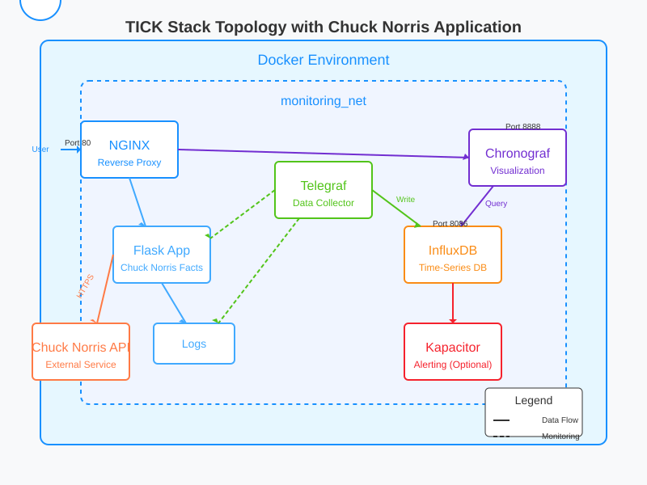

TICK Stack with Chuck Norris Monitor - Lab Guide¶
This guide explains how to set up the TICK stack (Telegraf, InfluxDB, Chronograf, Kapacitor) to monitor a web application that integrates with the Chuck Norris API. Each component plays a specific role in the monitoring pipeline, and we'll explore how they work together.

Understanding The Components¶
1. Telegraf¶
What it is: A collection agent that gathers metrics from various sources.
Why we need it: Telegraf serves as our "collector" that gathers all the data we want to monitor. It can collect: - System metrics (CPU, memory, disk) - Docker container metrics - HTTP endpoint performance - Log files
How it works: Telegraf uses plugins to collect data from different sources, then sends this data to InfluxDB in a format it can understand.
2. InfluxDB¶
What it is: A time-series database optimized for high-write and query loads.
Why we need it: Monitoring data is time-based (metrics collected at specific timestamps), making InfluxDB ideal for storing this information efficiently. It handles: - Storing metrics with timestamps - Retaining historical data - Querying time-series data quickly
How it works: InfluxDB stores data in "buckets" (collections of related time-series data) and uses a SQL-like query language called Flux.
3. Chronograf¶
What it is: A visualization and dashboard tool.
Why we need it: Raw metrics aren't useful without visualization. Chronograf provides: - Interactive dashboards - Data exploration tools - Admin interfaces for InfluxDB and Kapacitor
How it works: Chronograf connects to InfluxDB, queries the data, and displays it in customizable dashboards.
4. Kapacitor (Optional for Alerting)¶
What it is: A real-time streaming data processing engine.
Why it's useful: Kapacitor allows you to: - Create alerts based on thresholds - Process data in real-time - Execute custom logic on your metrics
How it works: Kapacitor subscribes to data from InfluxDB and can perform calculations, transformations, and trigger alerts.
Lab Setup Steps¶
Step 1: Initial Server Setup¶
# Update system packages
sudo apt-get update && sudo apt-get upgrade -y
# Install required packages
sudo apt-get install -y \
apt-transport-https \
ca-certificates \
curl \
git
# Install Docker
curl -fsSL https://get.docker.com -o get-docker.sh
sudo sh get-docker.sh
# Install Docker Compose
sudo curl -L "https://github.com/docker/compose/releases/latest/download/docker-compose-$(uname -s)-$(uname -m)" -o /usr/local/bin/docker-compose
sudo chmod +x /usr/local/bin/docker-compose
# Add your user to the docker group (why: to run docker without sudo)
sudo usermod -aG docker $USER
newgrp docker
Step 2: Create Project Structure¶
# Create main project directory
mkdir -p ~/tick-stack
cd ~/tick-stack
# Create directories for each component
mkdir -p {telegraf,kapacitor,influxdb,nginx/conf.d,flask-app}
mkdir -p flask-app/logs
# Create log file for the Flask application
touch flask-app/logs/app.log
chmod 666 flask-app/logs/app.log
Why this structure: Each component needs its own configuration files and persistent storage. This directory structure keeps everything organized and allows Docker to mount these directories as volumes.
Step 3: Environment Variables and Docker Compose¶
Create the environment file with configuration variables:
cat > ~/tick-stack/.env << 'EOL'
# InfluxDB Configuration
DOCKER_INFLUXDB_INIT_MODE=setup
DOCKER_INFLUXDB_INIT_USERNAME=admin
DOCKER_INFLUXDB_INIT_PASSWORD=your_secure_password
DOCKER_INFLUXDB_INIT_ORG=my_org
DOCKER_INFLUXDB_INIT_BUCKET=my_bucket
DOCKER_INFLUXDB_INIT_ADMIN_TOKEN=your_secure_token
INFLUX_TOKEN=your_secure_token
INFLUX_ORG=my_org
# Flask App Configuration
FLASK_ENV=production
LOG_LEVEL=INFO
# Get Docker GID - automatically detect your Docker group ID
DOCKER_GID=$(getent group docker | cut -d: -f3)
EOL
Why these variables: - InfluxDB requires initialization parameters for the first run - The admin token is needed for secure API access - FLASK_ENV controls debugging features - LOG_LEVEL determines what gets logged - DOCKER_GID gives Telegraf access to Docker metrics
Create the Docker Compose file:
cat > ~/tick-stack/docker-compose.yml << 'EOL'
version: '3'
services:
influxdb:
image: influxdb:latest
container_name: influxdb
restart: always
ports:
- "8086:8086"
volumes:
- ./influxdb:/var/lib/influxdb2
environment:
- DOCKER_INFLUXDB_INIT_MODE=${DOCKER_INFLUXDB_INIT_MODE}
- DOCKER_INFLUXDB_INIT_USERNAME=${DOCKER_INFLUXDB_INIT_USERNAME}
- DOCKER_INFLUXDB_INIT_PASSWORD=${DOCKER_INFLUXDB_INIT_PASSWORD}
- DOCKER_INFLUXDB_INIT_ORG=${DOCKER_INFLUXDB_INIT_ORG}
- DOCKER_INFLUXDB_INIT_BUCKET=${DOCKER_INFLUXDB_INIT_BUCKET}
- DOCKER_INFLUXDB_INIT_ADMIN_TOKEN=${DOCKER_INFLUXDB_INIT_ADMIN_TOKEN}
networks:
- monitoring_net
telegraf:
image: telegraf:latest
container_name: telegraf
restart: always
volumes:
- ./telegraf/telegraf.conf:/etc/telegraf/telegraf.conf:ro
- /var/run/docker.sock:/var/run/docker.sock:ro
- /proc:/host/proc:ro
- /sys:/host/sys:ro
- ./flask-app/logs:/app/logs:ro
environment:
- INFLUX_TOKEN=${INFLUX_TOKEN}
- INFLUX_ORG=${DOCKER_INFLUXDB_INIT_ORG}
- INFLUX_BUCKET=${DOCKER_INFLUXDB_INIT_BUCKET}
group_add:
- "${DOCKER_GID:-999}"
depends_on:
- influxdb
networks:
- monitoring_net
chronograf:
image: chronograf:latest
container_name: chronograf
restart: always
ports:
- "8888:8888"
volumes:
- ./chronograf:/var/lib/chronograf
depends_on:
- influxdb
environment:
- INFLUXDB_URL=http://influxdb:8086
- INFLUXDB_TOKEN=${INFLUX_TOKEN}
- INFLUXDB_ORG=${DOCKER_INFLUXDB_INIT_ORG}
networks:
- monitoring_net
kapacitor:
image: kapacitor:latest
container_name: kapacitor
restart: always
volumes:
- ./kapacitor/kapacitor.conf:/etc/kapacitor/kapacitor.conf:ro
depends_on:
- influxdb
networks:
- monitoring_net
flask-app:
build: ./flask-app
container_name: flask-app
restart: always
volumes:
- ./flask-app:/app
- ./flask-app/logs:/app/logs
environment:
- FLASK_ENV=${FLASK_ENV}
- LOG_LEVEL=${LOG_LEVEL}
networks:
- monitoring_net
nginx:
image: nginx:latest
container_name: nginx
restart: always
ports:
- "80:80"
volumes:
- ./nginx/conf.d:/etc/nginx/conf.d
depends_on:
- flask-app
- chronograf
networks:
- monitoring_net
networks:
monitoring_net:
driver: bridge
EOL
Why this configuration: - Volume mounts: Each container needs access to its configuration and persistent data - Networks: All services are on the same network so they can communicate - Dependencies: Some services need to wait for others to start - Environment variables: Passed from the .env file to configure the services - Restart policy: Services automatically restart if they crash - Port mappings: Only expose the necessary ports to the host
Step 4: Telegraf Configuration¶
Telegraf is the data collector. Its configuration defines what metrics to collect and where to send them:
cat > ~/tick-stack/telegraf/telegraf.conf << 'EOL'
# Global Agent Configuration
[agent]
interval = "10s" # How often to collect metrics
round_interval = true # Round collection interval
metric_batch_size = 1000 # Batch size for writes to InfluxDB
metric_buffer_limit = 10000 # Buffer size if InfluxDB is unavailable
collection_jitter = "0s" # Add random delays to prevent thundering herd
flush_interval = "10s" # How often to send metrics to outputs
flush_jitter = "0s" # Add random delays to flush interval
precision = "" # Timestamp precision
hostname = "" # Override default hostname
omit_hostname = false # Include hostname in metrics
# Output to InfluxDB v2
[[outputs.influxdb_v2]]
urls = ["http://influxdb:8086"]
token = "${INFLUX_TOKEN}"
organization = "${INFLUX_ORG}"
bucket = "${DOCKER_INFLUXDB_INIT_BUCKET}"
# Docker Metrics Collection
[[inputs.docker]]
endpoint = "unix:///var/run/docker.sock"
gather_services = false
container_names = []
container_name_include = []
container_name_exclude = []
timeout = "5s"
perdevice = true
total = false
# System Metrics Collection
[[inputs.cpu]]
percpu = true
totalcpu = true
collect_cpu_time = false
report_active = false
[[inputs.disk]]
ignore_fs = ["tmpfs", "devtmpfs", "devfs", "iso9660", "overlay", "aufs", "squashfs"]
[[inputs.diskio]]
[[inputs.mem]]
[[inputs.net]]
[[inputs.processes]]
[[inputs.swap]]
[[inputs.system]]
# HTTP Response Monitoring (Flask App)
[[inputs.http_response]]
urls = ["http://flask-app:5000"]
response_timeout = "5s"
method = "GET"
follow_redirects = true
# Monitor the Chuck Norris API
[[inputs.http_response]]
urls = ["https://api.chucknorris.io/jokes/random"]
response_timeout = "5s"
method = "GET"
follow_redirects = true
name_override = "chuck_norris_api"
# Log File Monitoring
[[inputs.file]]
files = ["/app/logs/app.log"]
from_beginning = true
data_format = "grok"
grok_patterns = ["%{TIMESTAMP_ISO8601:timestamp} %{LOGLEVEL:level} %{GREEDYDATA:message}"]
# Real-time Log Monitoring
[[inputs.tail]]
files = ["/app/logs/app.log"]
from_beginning = true
pipe = false
data_format = "grok"
grok_patterns = ["%{TIMESTAMP_ISO8601:timestamp} %{LOGLEVEL:level} %{GREEDYDATA:message}"]
name_override = "chuck_norris_logs"
EOL
Key aspects of this configuration: - agent section: Controls how often Telegraf collects and sends data - outputs.influxdb_v2: Configures the connection to InfluxDB - inputs: These are the data collection plugins - docker: Gathers metrics from Docker containers - cpu, disk, mem, etc.: Collect system metrics - http_response: Monitors HTTP endpoints - file/tail: Parses log files using Grok patterns
Why these metrics are important: - System metrics help identify resource bottlenecks - HTTP response metrics show application availability and performance - Log metrics help identify errors and patterns - Docker metrics show container health
Step 5: Nginx Configuration¶
Nginx serves as a reverse proxy to make all services accessible through a single entry point:
cat > ~/tick-stack/nginx/conf.d/default.conf << 'EOL'
server {
listen 80;
server_name _;
# Flask Application (Chuck Norris Facts)
location / {
proxy_pass http://flask-app:5000;
proxy_set_header Host $host;
proxy_set_header X-Real-IP $remote_addr;
proxy_set_header X-Forwarded-For $proxy_add_x_forwarded_for;
proxy_set_header X-Forwarded-Proto $scheme;
}
# Chronograf UI
location /chronograf/ {
proxy_pass http://chronograf:8888/;
proxy_set_header Host $host;
proxy_set_header X-Real-IP $remote_addr;
proxy_set_header X-Forwarded-For $proxy_add_x_forwarded_for;
proxy_set_header X-Forwarded-Proto $scheme;
}
# InfluxDB API
location /influxdb/ {
proxy_pass http://influxdb:8086/;
proxy_set_header Host $host;
proxy_set_header X-Real-IP $remote_addr;
proxy_set_header X-Forwarded-For $proxy_add_x_forwarded_for;
proxy_set_header X-Forwarded-Proto $scheme;
}
}
EOL
Why this configuration: - All services are accessible through a single port (80) - Path-based routing makes each service available at its own URL - Headers are properly forwarded, ensuring services receive the correct client information - Reduces the number of ports that need to be opened in firewalls
Step 6: Flask Application with Chuck Norris API Integration¶
Now we'll create the Flask application that will be monitored. First, let's make the requirements.txt file:
Next, create the Dockerfile:
cat > ~/tick-stack/flask-app/Dockerfile << 'EOL'
FROM python:3.9-slim
WORKDIR /app
COPY requirements.txt .
RUN pip install --no-cache-dir -r requirements.txt
COPY . .
# Create logs directory if it doesn't exist
RUN mkdir -p /app/logs && touch /app/logs/app.log && chmod 666 /app/logs/app.log
ENV FLASK_APP=app.py
ENV FLASK_ENV=production
CMD ["python", "app.py"]
EOL
Finally, create the Flask application:
cat > ~/tick-stack/flask-app/app.py << 'EOL'
import logging
import os
import random
import time
import requests
from datetime import datetime
from flask import Flask, jsonify, request, render_template_string
from logging.handlers import RotatingFileHandler
# Configure logging
log_level = os.environ.get('LOG_LEVEL', 'INFO').upper()
log_formatter = logging.Formatter('%(asctime)s %(levelname)s %(message)s')
# Create file handler
file_handler = RotatingFileHandler('/app/logs/app.log', maxBytes=10485760, backupCount=10)
file_handler.setFormatter(log_formatter)
# Create console handler
console_handler = logging.StreamHandler()
console_handler.setFormatter(log_formatter)
# Set up app logger
logger = logging.getLogger()
logger.setLevel(getattr(logging, log_level))
logger.addHandler(file_handler)
logger.addHandler(console_handler)
app = Flask(__name__)
# Chuck Norris facts stats
chuck_stats = {
"total_requests": 0,
"categories": {},
"last_fact": "",
"errors": 0
}
# HTML template for the main page
HTML_TEMPLATE = """
<!DOCTYPE html>
<html>
<head>
<title>Chuck Norris Facts Monitor</title>
<style>
body {
font-family: Arial, sans-serif;
max-width: 800px;
margin: 0 auto;
padding: 20px;
background-color: #f5f5f5;
}
.container {
background-color: white;
border-radius: 8px;
padding: 20px;
box-shadow: 0 2px 4px rgba(0,0,0,0.1);
}
.fact {
font-size: 24px;
margin: 20px 0;
padding: 15px;
background-color: #fffacd;
border-left: 5px solid #ffd700;
border-radius: 4px;
}
.buttons {
margin: 20px 0;
}
button {
background-color: #4CAF50;
border: none;
color: white;
padding: 10px 20px;
text-align: center;
text-decoration: none;
display: inline-block;
font-size: 16px;
margin: 4px 2px;
cursor: pointer;
border-radius: 4px;
}
.stats {
margin-top: 30px;
padding: 15px;
background-color: #e6f7ff;
border-left: 5px solid #1890ff;
border-radius: 4px;
}
.categories {
display: flex;
flex-wrap: wrap;
gap: 10px;
margin: 20px 0;
}
.category-button {
background-color: #1890ff;
}
.error-button {
background-color: #ff4d4f;
}
.slow-button {
background-color: #faad14;
}
</style>
</head>
<body>
<div class="container">
<h1>Chuck Norris Facts Monitor</h1>
<div class="fact">
{{ fact }}
</div>
<div class="buttons">
<button onclick="window.location.href='/'">Random Fact</button>
<button onclick="window.location.href='/health'">Health Check</button>
<button class="error-button" onclick="window.location.href='/error'">Trigger Error</button>
<button class="slow-button" onclick="window.location.href='/slow'">Slow Response</button>
</div>
<div class="categories">
<h3>Get fact by category:</h3>
{% for category in categories %}
<button class="category-button" onclick="window.location.href='/category/{{ category }}'">{{ category }}</button>
{% endfor %}
</div>
<div class="stats">
<h2>Monitoring Stats</h2>
<p><strong>Total Requests:</strong> {{ stats.total_requests }}</p>
<p><strong>Errors:</strong> {{ stats.errors }}</p>
<p><strong>Categories Requested:</strong></p>
<ul>
{% for category, count in stats.categories.items() %}
<li>{{ category }}: {{ count }}</li>
{% endfor %}
</ul>
</div>
</div>
</body>
</html>
"""
@app.route('/')
def index():
logger.info("Index page accessed - fetching random Chuck Norris fact")
try:
response = requests.get('https://api.chucknorris.io/jokes/random')
if response.status_code == 200:
fact = response.json()['value']
chuck_stats["last_fact"] = fact
chuck_stats["total_requests"] += 1
logger.info(f"Successfully fetched Chuck Norris fact: {fact[:30]}...")
# Get categories for display
categories_response = requests.get('https://api.chucknorris.io/jokes/categories')
categories = categories_response.json() if categories_response.status_code == 200 else []
return render_template_string(
HTML_TEMPLATE,
fact=fact,
stats=chuck_stats,
categories=categories
)
else:
logger.error(f"Failed to fetch Chuck Norris fact, status code: {response.status_code}")
chuck_stats["errors"] += 1
return render_template_string(
HTML_TEMPLATE,
fact="Chuck Norris is currently unavailable. Even APIs fear him.",
stats=chuck_stats,
categories=[]
)
except Exception as e:
logger.error(f"Error fetching Chuck Norris fact: {str(e)}")
chuck_stats["errors"] += 1
return render_template_string(
HTML_TEMPLATE,
fact="Error fetching Chuck Norris fact. Chuck is investigating.",
stats=chuck_stats,
categories=[]
)
@app.route('/category/<category>')
def category_fact(category):
logger.info(f"Category fact requested: {category}")
try:
response = requests.get(f'https://api.chucknorris.io/jokes/random?category={category}')
if response.status_code == 200:
fact = response.json()['value']
chuck_stats["last_fact"] = fact
chuck_stats["total_requests"] += 1
# Update category stats
if category in chuck_stats["categories"]:
chuck_stats["categories"][category] += 1
else:
chuck_stats["categories"][category] = 1
logger.info(f"Successfully fetched {category} Chuck Norris fact")
# Get categories for display
categories_response = requests.get('https://api.chucknorris.io/jokes/categories')
categories = categories_response.json() if categories_response.status_code == 200 else []
return render_template_string(
HTML_TEMPLATE,
fact=fact,
stats=chuck_stats,
categories=categories
)
else:
logger.error(f"Failed to fetch {category} Chuck Norris fact, status code: {response.status_code}")
chuck_stats["errors"] += 1
return render_template_string(
HTML_TEMPLATE,
fact=f"Chuck Norris {category} facts are too powerful to display right now.",
stats=chuck_stats,
categories=[]
)
except Exception as e:
logger.error(f"Error fetching {category} Chuck Norris fact: {str(e)}")
chuck_stats["errors"] += 1
return render_template_string(
HTML_TEMPLATE,
fact=f"Error fetching {category} Chuck Norris fact.",
stats=chuck_stats,
categories=[]
)
@app.route('/slow')
def slow_response():
logger.warning("Slow response endpoint accessed - simulating delay")
# Simulate a slow response
sleep_time = random.uniform(3, 8)
time.sleep(sleep_time)
logger.warning(f"Slow response completed after {sleep_time:.2f} seconds")
# Get a fact after the delay
try:
response = requests.get('https://api.chucknorris.io/jokes/random')
if response.status_code == 200:
fact = response.json()['value']
chuck_stats["last_fact"] = fact
chuck_stats["total_requests"] += 1
# Get categories for display
categories_response = requests.get('https://api.chucknorris.io/jokes/categories')
categories = categories_response.json() if categories_response.status_code == 200 else []
return render_template_string(
HTML_TEMPLATE,
fact=f"SLOW RESPONSE: {fact}",
stats=chuck_stats,
categories=categories
)
else:
chuck_stats["errors"] += 1
return "Error fetching Chuck Norris fact", 500
except Exception as e:
logger.error(f"Error in slow response: {str(e)}")
chuck_stats["errors"] += 1
return "Server error", 500
@app.route('/error')
def simulate_error():
# Route to test error logging
error_type = request.args.get('type', 'error')
if error_type == 'warning':
logger.warning("This is a test warning from Chuck Norris")
return render_template_string(
HTML_TEMPLATE,
fact="WARNING: Chuck Norris doesn't warn, he informs fate.",
stats=chuck_stats,
categories=[]
)
elif error_type == 'critical':
logger.critical("This is a test critical error from Chuck Norris")
chuck_stats["errors"] += 1
return "Chuck Norris critical error", 500
else:
logger.error("This is a test error from Chuck Norris")
chuck_stats["errors"] += 1
return "Chuck Norris error", 500
@app.route('/health')
def health_check():
# Simulate occasional health check failures
if random.random() < 0.05:
logger.error("Health check failed")
return jsonify({"status": "error", "message": "Chuck Norris is currently busy roundhouse kicking the server"}), 500
logger.info("Health check passed")
return jsonify({
"status": "ok",
"message": "Chuck Norris approves of this server's health",
"stats": chuck_stats
})
@app.route('/api/stats')
def api_stats():
logger.info("API stats requested")
return jsonify(chuck_stats)
# Generate random logs periodically
def generate_logs():
while True:
# Generate random log every 20-60 seconds
sleep_time = random.randint(20, 60)
time.sleep(sleep_time)
# Try to get a Chuck Norris fact for the log
try:
response = requests.get('https://api.chucknorris.io/jokes/random')
if response.status_code == 200:
fact = response.json()['value']
fact_snippet = fact[:50] + "..." if len(fact) > 50 else fact
else:
fact_snippet = "Could not fetch Chuck Norris fact"
except:
fact_snippet = "Error fetching Chuck Norris fact"
# Random log level distribution
rand = random.random()
if rand < 0.7: # 70% INFO
logger.info(f"Chuck Norris fact logged: {fact_snippet}")
elif rand < 0.85: # 15% WARNING
logger.warning(f"Chuck Norris warning: {fact_snippet}")
elif rand < 0.95: # 10% ERROR
logger.error(f"Chuck Norris error: {fact_snippet}")
else: # 5% CRITICAL
logger.critical(f"Chuck Norris critical situation: {fact_snippet}")
# Start log generator in a separate thread
import threading
log_thread = threading.Thread(target=generate_logs, daemon=True)
log_thread.start()
if __name__ == '__main__':
logger.info("Chuck Norris Facts application starting")
app.run(host='0.0.0.0', port=5000)
EOL
Why this app is designed this way:
- HTML template: Simple, single-page application that doesn't require separate HTML files
- Routes:
- / - Displays random Chuck Norris facts
- /category/<category> - Shows facts from specific categories
- /slow - Simulates slow responses (great for testing timeouts)
- /error - Generates errors (perfect for testing error monitoring)
- /health - Health check endpoint (important for monitoring availability)
- /api/stats - JSON endpoint for monitoring stats
- Logging: All operations are logged with appropriate severity levels
- Background thread: Continuously generates log entries based on Chuck Norris facts
Step 7: Launch the Stack¶
Start all the containers:
Check that everything is running:
Step 8: Using the Monitoring Stack¶
1. Chuck Norris Application¶
Access the Chuck Norris application at: http://your-server-ip/
Try these interactions to generate different metrics: - Get a random fact by clicking the "Random Fact" button - Try different categories - Click "Slow Response" to simulate a performance issue - Click "Trigger Error" to generate error logs
2. Chronograf¶
Access the Chronograf dashboard at: http://your-server-ip/chronograf/
When you first open Chronograf:
1. Set up the connection to InfluxDB:
- URL: http://influxdb:8086
- Organization: my_org (from your .env file)
- Token: Your token from the .env file
- Default Bucket: my_bucket
- Explore the data:
- Click on "Explore" in the left menu
- Select a measurement (e.g.,
http_response) -
Build queries to analyze your data
-
Create dashboards:
- Click "Dashboards" in the left menu
- Create a new dashboard
- Add panels for different metrics
Example metrics to monitor: - CPU and memory usage of containers - HTTP response times for the Flask app - Error rates from logs - Chuck Norris API response times - Category popularity from the application stats
3. Examining Logs¶
Check the logs from different components: